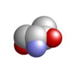
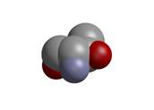

There are many excellent visualization packages in structural biology. Unfortunately, no single package meets the needs of the entire community and even an individual researcher may have to use several different packages in the course of an experiment. One package may be used during structure solution to work with electron density maps and models, another package to interactively review configurations to achieve an understanding of the interaction of structure and function and to select views that will help to illustrate those points to others. Yet other packages may be used for high quality publication renderings, movies and instructional tutorials. Despite many decades of effort at integrating software for structural biology into comprehensive suites, the transition from program to program can still be clumsy and time-consuming. This unnecessary loss of time is compounded when one structural biologist communicates their findings or ideas to another structural biologist who uses different visualization and modeling software tools.
The goal of the SBEVSL project is to combine the full power that is currently available in molecular visualization with a level of ease of use that has not previously been achieved. We will make tools available to the broadest possible audience in such a way that users familiar with one program can transport their scripts to another program without having to learn the subtleties of the command language for the new program. In this way, users will be able to migrate easily between different molecular visualization environments, taking advantage of the strengths of each of these programs. As of this writing, a structural biologist with a solved three-dimensional macromolecular structure in hand might use RasMol [Sayle and Milner-White, 1995] [Bernstein, 2000] or PyMOL [DeLano, 2002] or Jmol [Gezelter, 1999] [Willighagen and Howard, 2005] to explore possible views of subsets of the structure, then switch to MolScript or Bobscript [Esnouf, 1997] [Esnouf, 1999] and Raster3D [Merritt and Bacon, 1997] to try to recreate selected views for publication and switch again to other programs to produce movies for a meeting presentation. With each change, the user needs to redo much of the same work in order to get different programs with subtly different rules and languages to produce essentially the same views of the molecule. Consider how much time could be saved if there were a reliable way to export the user's efforts in setting up views in one program in a script that would be accepted by other programs to produce the same views.
The SBEVSL project will take a major step in this direction by creating a new extensible scripting language for molecular graphics as used in structural biology. SBEVSL will combine the intuitive expressive power of the widely used scripting language created by Roger Sayle for RasMol with the general object-oriented extensibility of the Python scripting of PyMOL and the full publication graphics scripting and movie-making capabilities of other programs. Major existing open source molecular graphics programs, including RasMol, Jmol and PyMOL, will be adapted to accept scripts written in the new scripting language, and means will be provided so that scripts can be saved in this new format. The workflow for presentation of structural studies will change dramatically and will allow smooth transitions among multiple rendering packages that now take many hours or days to accomplish. We will follow and use ideas from the creation of the Unified Modeling Language (UML) [Rumbaugh et al., 1998] in the mid 1990s to abstract the common ideas from existing molecular graphics scripting languages. The SBEVSL project will complement the efforts of others to produce a single rendering system that will meet most of the molecular graphics rendering needs of structural biologists (e.g. ccp4mg [Potterton, 2004]) and will assist those users who wish to make the transition to newer and hopefully better programs by helping users to adapt their existing scripts or even to continue to use the scripting languages with which they are familiar. At the same time the SBEVSL project will assist structural biologists who wish to continue to work with familiar tools to use those tools in a more effective manner and will give software developers a clear set of definitions with which to work.
We propose adopting an approach similar to that used for UML with tools appropriate to structural biology. Rather than attempt to impose a language from one specific molecular graphics program on the other programs, we propose extracting all the concepts used in their command languages and gathering them into one master ontology (i.e. a dictionary with relationships among the terms). We will use this dictionary as a relational database with CIF [Hall et al., 1991] and XML [Bray et al., 1998] presentations, respecting currently agreed IUCr and IUPAC nomenclature conventions.
We will define SBEVSL in terms of the SBEVSL dictionary, the CIF, mmCIF and CBF/imgCIF dictionaries and in terms of UML, so that SBEVSL will be easily translated into almost any object- oriented language using terms commonly found in structural biology. We will provide translations into Python, JavaScript, Java and C++, and back-translations from RasMol and PyMOL scripts. We will introduce direct processing of SBEVSL by RasMol, Jmol and PyMOL, and external translators should allow most other molecular graphics programs to be used with SBEVSL without modification until their maintainers choose to adapt them.
Programs will still support the scripts and scripting languages they currently use, preserving the massive user investment in script libraries and training already made. SBEVSL will allow structural biologists to switch easily between programs, allowing them to focus on the structure of molecules and their interactions instead of spending time learning the details of scripting languages for different molecular graphics programs.
This is a research infrastructure development project for structural biology drawing on and adding to research in bioinformatics. Specific outcomes of this project will be
In the early days of molecular graphics (see for example [Johnson, 1970]) drawing was normally controlled by preparing lists of commands that were processed in batch mode on central computer facilities. For many years, the scripting language developed by Roger Sayle for use in RasMol [Sayle and Milner-White, 1995] [Bernstein, 2000]) has allowed researchers and students to communicate informative views of molecules when working with RasMol or Chime. These scripts are an important tool to efficiently preserve and communicate static and dynamic images of important features of biological molecules. This capability has been used extensively as an educational tool to take students through prepared sequences of views illuminating important aspects of the chemistry and biology of molecules.
There are many molecular graphics programs, most with their own command language and internal approach to storage of a database of structural elements, but for structural biology the conceptual framework to be supported is unified by the practical demands of the domain. To be successful a program must provide a mechanism to select atoms, residues and chains and must be able to render wireframe, CPK, ball and stick, cartoon and other standard presentations. Table 1 contains a listing of many of these programs and a summary of their capabilities. All of the programs have a GUI interface, but they are distinct in their capabilities. Some are able only to visualize existing data in a specific format (visualization in Table 1), while others can be used for developing and building structural models from x-ray crystallographic data (molecular modeling in Table 1).
| Program |
Command Line Interface |
Visualization |
Molecular Modeling |
| Rasmol | Yes | Yes | No |
| Chime | Yes | Yes | No |
| Jmol | Yes | Yes | No |
| Cn3D | No | Yes | No |
| DeepView | No | Yes | Yes |
| Kinemage | Yes | Yes | Yes |
| PyMOL | Yes | Yes | Yes |
| CCP4 | Yes | Yes | Yes |
Table 1. Molecular Visualization Programs.
These software tools are commonly used by structural biologists with backgrounds ranging from education to structure determination. Visualization refers to the ability to display structural information in the form of a data file containing three-dimensional coordinates.
Additional distinctions exist among these programs as well. For example, Kinemage [Richardson and Richardson, 1992] requires users to create a separate text file that contains commands that control the resulting image; commands can be entered interactively (on-the-fly) for the remaining programs that have a command line interface. Cn3D [Wang et al., 2000] only reads files in ASN.1 format, whereas the remaining programs all read files in PDB format. Chime (see http://www.mdl.com/) is a proprietary implementation of Rasmol which allows molecular visualization within web pages. While it has been very popular since its introduction in the mid-1990's, the proprietary nature of Chime has led to problems with support among users. Recently, Jmol, a java program for molecular visualization, adopted the same scripting language and has rapidly become a viable replacement for Chime as a browser plugin, able to present Chime tutorials on a wider range of platforms. Jmol has the further advantage of being open source software.
Scripting makes the RasMol command language extensible by calling scripts from within scripts as commands, but without variables and full control structures this basic approach is of limited applicability. A programming language is needed for full extensibility of a scripting language.
PyMOL [DeLano 2002] and ccp4mg [Potterton et al. 2004] are recent molecular graphics programs that use the Python programming language to make their scripting command language fully extensible. The ccp4mg effort describes its context and objectives in the following terms: "the crystallographer's toolkit for visualization, manipulation and analysis of molecules remains diverse: apart from the existence of personal preferences, most crystallographers will use different software for initial model building, rebuilding during refinement, illustration of the fold and illustration of atomic details with or without electron-density maps. Moreover, the time-consuming model-rebuilding process that by nature is coupled to structure refinement has never been tightly integrated with refinement software. The CCP4mg project was set up with the ambitious goal of addressing the need for an all-inclusive package that will suit both the needs of the molecular biologists who want to look at and analyze and illustrate macromolecular structures, and crystallographers, novice and expert, who want to manipulate and build models using electron-density maps."
The idea of using Python as an extension mechanism has also been added to the Crystallographic Information File (CIF) format, originally created as a static data format [Hall et al., 1991] and now extended in the form of dRel and StarDDL [Hall et al., 2005] to support data definitions with methods defined in Python. Note that the rendering of a molecule with a molecular graphics program is essentially an augmented presentation of the information given in a CIF, PDB or mmCIF dataset. Note also that CIF is easily recast into XML and that the members of the IUCr Committee on the Maintenance of the CIF standard (COMCIFS) agreed at their meetings in Florence in August 2005 to work towards full CIF and XML interoperability.
This situation, of having multiple packages with similar capabilities but lacking in interoperability, is similar to that faced by the object-oriented modeling community in the late 1980's and early 1990's when "Grady Booch and Jim Rumbaugh ... began their work on unifying the Booch and OMT (Object Modeling Technique) methods ... [and] leading to the creation of UML. ( http://pigseye.kennesaw.edu/~dbraun/csis4650/A&D/UML_tutorial/history_of_uml.htm)
In order to consolidate the approaches to molecular graphics scripting, we will adopt an approach similar to that used to define UML, but with tools appropriate to the domain of structural biology. The PDB format description, the PDB's mmCIF exchange dictionary and the core CIF dictionary used for small molecules will be important reference documents for the SBEVSL dictionary, as will the imgCIF dictionary used, among other purposes, to specify the pixel-by-pixel layout of images. (For a discussion of the PDB, see [Bernstein et al., 1977]. For a discussion of the Cambridge Structural Database (CSD), see [Allen et al., 1973]. For additional references on the PDB, the CSD and various other databases in structural biology, see Bernstein and Bernstein, 2005). We will define SBEVSL in terms of the SBEVSL dictionary and UML, so that SBEVSL will be easily translated into almost any object- oriented language. We will provide sample translations into Python, JavaScript, Java and C++, and back-translations from RasMol and PyMOL scripts. We will introduce direct processing of SBEVSL by RasMol and PyMOL, and external translators should allow most other molecular graphics programs to be used with SBEVSL without modification until their maintainers choose to adapt them.
All the essential pieces needed to bring molecular graphics scripting languages into a standardized framework and achieve significant improvements in these important aspects of doing structural biology currently exist. However, there are challenging problems to overcome that stem from the reality that many structural biologists are neither interested in nor capable of working as programmers in an object- oriented environment.
For a computer scientist, object-oriented programming is a very natural way to create and use software managing graphic "objects". For a structural biologist working with a molecular graphics program, an atom or a residue or a sheet strand is just a static object. For such a user, the object has various attributes, such as coordinates, color, and mode of display (CPK, ball and stick, Lee-Richards surface, etc.). The user wants to be able to examine and change the attributes of the object, but he would be rather upset and confused if the object had a mind of its own, if it were to take actions. The computer scientist, on the other hand, most definitely does want an object to have a mind of its own, to take actions. Indeed, for a computer scientist, the essence of object-oriented programming is to be able to associate behaviors with objects, and, if s/he is a purist, s/he will not allow the user to change any of the attributes of an object directly, but will insist that the user politely send the object a message and ask it to use its behaviors (its "actions" or "methods") to change its attributes all by itself. Bridging this divergence of views is the most challenging problem that the SBEVSL project must address. In order to allow full extensibility of the scripting language as structural biologists explore new ways in which to visualize and understand biological molecules, it must fully support object-oriented programming with full message passing and complex hierarchical relationships among classes of objects. In order to be useful and acceptable to most structural biologists, it must allow them to work with the scripting language without being aware of the complexities of objects.
It must be emphasized that the need for users to run multiple graphics programs with differing conventions will be with us for many years to come. The PI has been involved in efforts to create suites of programs for structural biology since the CRYSNET effort [http://www.ccp4.ac.uk/dist/html/harvesting.html) is a sound modern approach that can and should be extended to help graphics programs to adapt to users, rather than having users adapt to graphics programs. Ccp4mg is a promising step in the right direction, but work of the type we are doing with SBEVSL is the essential base upon which truly sustainable efforts at integration can be based.
Preliminary Studies. For new applications, use this section to provide an account of the principal investigator/program director's preliminary studies pertinent to this application, including his/her preliminary experience with and outreach to the proposed racial/ethnic group members. This information will also help to establish the experience and competence of the investigator to pursue the proposed project. Except for Exploratory/Development Grants (R21/R33), Small Research Grants (R03), and Phase I Small Business Research Grants (R41/R43), peer review committees generally view preliminary data as an essential part of a research grant application. Preliminary data often aid the reviewers in assessing the likelihood of the success of the proposed project.
In the labs of both the PI and the Co-PI, undergraduates have solidly engaged in research on improving the scripting capabilities for molecular graphics, and in extending the software infrastructure needed to implement the research plan. For the past several years, the PI has been the primary maintainer of RasMol for the community. Undergraduate students under his supervision are actively engaged in extensions and revisions to RasMol's capabilities, including to the command language. Under a grant from the Department of Energy, Ortep-style commands are being added for full control over symmetry, and under other grants from the National Science Foundation output of the Raster3D scripting is being added. As of this writing, the Raster3D scripting is being tested by Martha Teeter. Under another grant from the National Science Foundation, undergraduate students working under the supervision of the PI are working on new software for the display of Lee-Richards molecular surfaces. The work on translating from RasMol to Raster3D is instructive about some of the more challenging aspects of aligning scripting languages. The text file input to RasMol is a combination of standard PDB format or mmCIF format coordinate data and simple procedural commands.
Fig. C1 shows a simple, one-residue test case input script for RasMol. Fig. C2 shows a portion of the resulting input script for Raster3D produced by the new translation code. One would be hard-pressed to recognize that these two scripts represent the same view of the same residue, but the resulting images shown side-by-side in Fig C3 make it clear that the scripts are showing the same view.
load pdb inline spacefill set specular on set background white exit HEADER TEST 10-SEP-05 0xxx CRYST1 1.0 1.0 1.0 90.00 90.00 90.00 P 1 1 ORIGX1 1.000000 0.000000 0.000000 0.00000 ORIGX2 0.000000 1.000000 0.000000 0.00000 ORIGX3 0.000000 0.000000 1.000000 0.00000 SCALE1 1.000000 0.000000 0.000000 0.00000 SCALE2 0.000000 1.000000 0.000000 0.00000 SCALE3 0.000000 0.000000 1.000000 0.00000 ATOM 1 N THR 1 17.047 14.099 3.625 1.00 13.79 ATOM 2 CA THR 1 16.967 12.784 4.338 1.00 10.80 ATOM 3 C THR 1 15.685 12.755 5.133 1.00 9.19 ATOM 4 O THR 1 15.268 13.825 5.594 1.00 9.85 ATOM 5 CB THR 1 18.170 12.703 5.337 1.00 13.02 ATOM 6 OG1 THR 1 19.334 12.829 4.463 1.00 15.06 ATOM 7 CG2 THR 1 18.150 11.546 6.304 1.00 14.23 END
Raster3d file: ../data/test.r3d Creator: RasMol Version 2.7.3 45 32 tiles in x,y 16 16 pixels (x,y) per tile 4 anti-aliasing level 4; 3X3->2X2 1.00 1.00 1.00 background color F shadows cast 10 Phong power 0.10 secondary light contribution 0.05 ambient light contribution 0.50 specular reflection component 0.0 eye position 1 1 1 main light source position( from over right shoulder) 1.000000 0.000000 0.000000 0 view matrix for coordinate transformations 0.000000 1.000000 0.000000 0 0.000000 0.000000 1.000000 0 0.000000 0.000000 0.000000 1.000000 translation 3 * * * 2 0.07928 0.11930 -0.12528 0.17502 0.784314 0.784314 0.784314 2 -0.18998 -0.09387 -0.05871 0.13089 0.941176 0 0 3 0.07928 0.11930 -0.12528 0.00374 0.08022 0.06526 -0.08003 0.00 0.784314 0.784314 0.784314 3 0.08022 0.06526 -0.08003 0.00374 0.08115 0.01122 -0.03478 0.00 0.784314 0.784314 0.784314 . . .
 
Under a grant from the Department of Energy, the PI with the collaboration of Frances C. Bernstein, is working on a new Wide PDB Format [Bernstein and Bernstein, 2005a]. Under contract to the International Union of Crystallography the PI and his students are revising several of the software packages used in the IUCr journal publication process to adapt them to new CIF standards.
During the summer of 2005, undergraduate students working under the supervision of the Co-PI did extensive work on the PyMOL user interface [Grell, Parkin 2005]. Online documentation of PyMOL clearly states, "Development has been focused on capabilities, not on ease-of-use for new users." [http://pymol.sourceforge.net/newman/user/S0107preface.html#2_4]. The students developed a new PyMOL interface, called PyMOL Made EZ, that allows novice users to develop sophisticated and informative molecular visualization without needing to learn Python or the command syntax of PyMOL, which is much closer to computer code than it is to the intuitive scripting language of Rasmol. Users can select nine different pre-set views (color by chain, ball & stick, surface rendering, charge, etc.) and four different movie animations (ligand zoom, protein build, highlight chains, rotation). Program settings (stereo viewing mode, for example) can be changed in a radio button format. PyMOL Made EZ contains a PDB file parser which dynamically populates drop-down menus to allow users to select structural features such as chains, DNA, protein, and ligands; at the same time, the file parser also populates an information page and creates a link to the primary citation for the selected structure. For users who prefer a command line interface, the students added a Rasmol-to-PyMOL script conversion utility. Examples of the translations from RasMol commands to PyMOL commands are shown in Fig. C4. In its current form, PyMOL Made EZ is an enhancement that will make PyMOL more accessible to educators and crystallographers. In addition to the SBEVSL efforts described herein, future plans for PyMOL Made EZ include expansion of the movie capabilities and an improved interface to online structural biology databases. We are also engaged in conversations with structural biologists at Brookhaven National Laboratory (where PyMOL Made EZ was developed using NSF funding) which will shape additional features and options in the interface.
|
RasMol/Jmol/Chime Commands |
PyMOL Commands |
| spacefill on | show spheres, all |
| spin on | mset 1 x180; util.mroll(1,180,1); mplay |
| center | orient |
| select dna | select resn a+t+g+c |
| select protein | select protein, resn GLY+PRO+ALA+VAL+LEU+ILE+MET+ CYS+PHE+TYR+TRP+HIS+LYS+ARG+GLN+ASN+GLU+ASP+SER+THR |
Interdisciplinary methods are, of necessity, used in this project. Past experience with the development of CIF and the strong community resistance to wider use of mmCIF has made clear the need to isolate most users in structural biology from the details of such computer science issues as management of metadata and ontologies, normalization of databases, and management of inheritance in object- oriented programming languages. Therefore a significant part of the SBEVSL effort must be directed towards providing access to all the features provided in a "flat", procedural (i.e. cookbook) manner, as has been so successful with RasMol, Molscript, and similarly popular programs. Yet, in order to provide the capabilities needs by sophisticated programmer/users and software developers the SBEVSL must support precisely the leading-edge details that most users want to avoid. We resolve these seemingly irreconcilable project design requirements by extending the approach used in UML and in many text processing systems: we define a internal data format that can faithfully reproduce all the details that must be managed and preserved for users who may need to deal with all details, while providing simple cookbook and GUI access suitable for most users. The approach of working with multiple views of the same information is precisely what we do with images in molecular graphics, and is, of necessity, the approach followed in programming individual molecular graphics programs. Now we will extend that approach to the management of the data and metadata used by multiple programs.
The current scripting language in RasMol is very flat and procedural. Most of the major objects a user will need to manipulate are implicitly predefined and users are free to change their attributes directly. For example, a user might write a script saying:
load pdb xxx.pdb spacefill color cpk select nitrogen color [60,60,255] select oxygen color [255,60,60]
in which a coordinate file in PDB format is loaded, rendered as a spacefilling CPK model, with the colors of the nitrogen atoms adjusted from the usual sky blue (which is represented in RGB format as [58,144,255]) to a somewhat stronger blue ([60,60,255]), and oxygen from bright red ([255,0,0]) to a somewhat pastel red ([255,60,60]). The closest RasMol comes to defining objects is by allowing the user to give a name to some collection of objects with a "define" command.
In order to preserve the investment in existing scripts, we must preserve the ability to read such procedural scripts. However, we must also support the full object-oriented view, in which one might write (using in this case a pseudo-java presentation).
component mm = new pdb(xxx.pdb);
component natoms;
component oatoms;
component other;
mm.spacefill();
mm.colormodel("CPK");
natoms = mm.select("nitrogen");
oatoms = mm.select("oxygen");
other = mm.exclude(natoms,oatoms);
natoms.color(60,60,255);
oatoms.color(255,60,60);
. . .
and define new classes of objects. The matter is further confused by the existence of two very different approaches to scripting. In one approach we simply keep a sequential record of the commands that have been executed, and to make a script we just write this log out to a file. In the other approach, the current state of the molecular database is examined to produce a totally new script that will produce an equivalent image to the one that has been generated. It is this second approach that will allow us to recover a flat, cookbook type of script from an arbitrarily complex object-oriented input, and to suppress the detailed information about which object is which.
Formally, the internal language we choose is UML, which is expressed many ways: as diagrams, as XML documents, as java programs, as C++ programs, etc. In the abstract, every rendering script is an object-oriented program, which may be mapped into the rich context of UML. This may sound complex, but it is actually simpler than the approach now taken by some Python-based molecular graphics programs and by dRel in which these packages provide an external Python interface which is interfaced internally with C++ or java.
This does not mean that every script must be translated to a much larger and more complex XML document carrying UML information. On the contrary, a RasMol script or a BobScript script can and should be preserved in its original form. What we will do is provide clean translations from each of them to the SBEVSL UML internal format and back, so that the current difficulties that users face in trying to move between rapidly generated interactive images with RasMol to carefully generated publication images with BobScript and Raster3D becomes a trivial operation. Thus, for example, the slightly different approaches to image slabbing in RasMol and in BobScript would each be mapped into the more general and fully parameterized half-plane clipping specification in SBEVSL. In coming back out to scripts for these and other programs, care will be required to preserve as much of what the user intended for each image as possible. Thus, if an image is to be slabbed with backbone bonds cut precisely at the plane, not, as is done in RasMol, at the alpha carbon within the slab, the newly generated script will have to dummy in a pseudo-atom at the break-point to reproduce the view. While such considerations will require time and attention, with N molecular graphics programs, we only need to deal with the 2N translations between those programs and SBEVSL, not the N2 cases users need to deal with now in which scripts from one program need to be converted to scripts for another molecular graphics program.
Because we are dealing with critical infrastructure for the community it is important that we make the resulting code as error-free as possible. We do this by structuring this effort as two quasi-independent efforts: one at Dowling College and one at Rochester Institute of Technology (RIT). While the PI at Dowling College will be fully responsible for the administration of the project, the best way to exercise that responsibility in this case is to allow the Co-PI at RIT and the students at RIT to work as an independent co-equal group, partitioning sub-tasks between the two, so that when one group has completed a task, the other group can test and review their work in a clean hand-off. This is not a duplication of effort, it is sound software engineering and very necessary if one wants to achieve a quality result. We recognize that it is normally the intent of the AREA program to support a single researcher working with students in a single school and that the current structure of the proposal generates indirect costs that would not be seen if, for example, the PI and the Co-PI had submitted two parallel coupled proposals. Unfortunately, the current NIH proposal submission rules do not provide the necessary administrative structures for such a submission in this case, and the submission of two uncoupled proposals could result in the funding of just one or the other, greatly reducing the chances of success of the project.
The first, and most essential project task is the creation of the SBEVSL dictionary. As the many years of work on the CIF dictionaries have shown, this is a task that combines the need for scientific experience and judgement with the need for many hours of patient editorial work. Fortunately, the work on CIF dictionaries used in structural biology also provides a sound base for this work, in particular, the mmCIF dictionary, the PDB extensions dictionary, the symmetry dictionary and the imgCIF dictionary. These existing dictionaries provide definitions for data upon which visualizations are built. The SBEVSL dictionary will be layered into this base. Since the PI is also the head of the imgCIF dictionary working group and has long been involved with work on the mmCIF dictionary and other aspects of the ontologies for structural biology, the PI and the Dowling group will take the lead on this task and the Co- PI with the RIT group will do the QA on this task.
As an example of what needs to be done, different graphics programs and platforms have different conventions for the organization of the picture elements (pixels) from which modern graphical images are created. The ARRAY_STRUCTURE category in the imgCIF dictionary provides the definitions needed to unambiguously specify the physical layout of image pixels according to all known pixel organizations. To this we will add new categories of definitions to specify logical windows, viewports and clipping in a manner consistent with X-windows, OpenGL, MS Windows and other commonly used molecular graphics conventions. Just as the imgCIF dictionary includes definitions for time-sequenced frames of detector images, we will add the necessary definitions for creation of molecular graphics movies.
Many of the necessary definitions involve presentation of algorithmic relationships among definitions, e.g. to specify symmetry transformations, perspective transformations, ray tracing, shadows, etc. Following the lead established in the dRel and StarDDL projects, we will include these algorithms in the SBEVSL dictionary as executable code, not just as comments. This will allow the SBEVSL dictionary to be executable and will facilitate the coupling of user and developer-created extensions, both in scripts and in local dictionaries, with the definitions in the dictionary
The creation of the dictionary will be a long-term effort extending through the life of this project and beyond as our discipline evolves, but we expect to have a reasonably complete base level draft of the dictionary ready within six months of the project start. As has been our practice with the other dictionaries, the first draft will be posted to the web for community review and participation, and we would expect to be able to present a formal, community-approved draft to IUCr COMCIFS for possible adoption well before the end of the project.
Translation of the dictionary to XML and UML will be handled by extending the tools being released by the dREL and StarDDL projects.
A very important input to the SBEVSL dictionary development is the abstraction of the concepts currently used in the RasMol, Jmol and PyMOL scripting languages and the adaptation of those programs to accept and produce SBEVSL scripts. Initial efforts will focus on these programs because of their open source policies. Because the concepts from these programs are needed for the dictionary effort and the best way to understand the subtleties of the concepts used is to work with these programs both as users and as developers, the work on the necessary modifications will begin even as the SBEVSL dictionary is being created. This might sound premature, but because of the mature state of CIF, XML and UML infrastructure, it is feasible and will allow the dictionary and modification efforts to inform each other. The RIT group will take the lead by continuing their work on augmenting PyMOL and will start on Jmol. After the initial effort on the dictionary itself, the Dowling group will start ramping up the modification work for RasMol.
Following rapid-prototyping practices, we expect to be able to demonstrate preliminary SBEVSL scripting support approximately a year into the project.
It is common practice in many labs to use libraries of prepared scripts to start visualizations in the most useful way (e.g. using cartoons for macromolecules and CPK models for ligands) and to perform routine tasks, such a preparing sequences of rotated images for movies. In the course of building the dictionary and modifying RasMol, Jmol and PyMol, useful SBEVSL scripts and translation filters to and from the native scripting languages of these programs will be developed and will be made available on the project web page.
As the translation filters stabilize, we will add translation forms to the project web site, so that users can do the conversions over the web, rather than having to change any local software. On the simple web interface users will be able to specify a program and provide a script from that program; in return they will receive a script that can be applied to the program(s) of their choice.
The overall timeline of the project is:
| Project Year |
Activity | Dowling Role |
RIT Role |
||
|---|---|---|---|---|---|
| 1 | SBEVSL dictionary | lead | QA | ||
| PyMOL modifications | QA | lead | |||
| Jmol modifications | QA | lead | |||
| RasMol modifications | lead | QA | |||
| Scripts and modifications for other programs |
lead and QA | lead and QA | |||
| Common scripts | lead and QA | lead and QA | |||
| Web site | lead | QA | |||
| 2 | SBEVSL dictionary review and extension |
QA | lead | ||
| Further PyMOL modifications | lead | QA | |||
| Further Jmol modifications | lead | QA | |||
| Further RasMol modifications | QA | lead | |||
| Scripts and modifications for other programs |
lead and QA | lead and QA | |||
| Common scripts | lead and QA | lead and QA | |||
| Web site | lead | QA | |||
| 3. | SBEVSL release to COMCIFS | lead | QA | ||
| PyMol wrapup | QA | lead | |||
| Jmol wrapup | QA | lead | |||
| Rasmol wrapup | lead | QA | |||
| Community outreach | joint | joint | |||
The main focus of the project is on open source software. The programs chosen for initial modification are widely-used open source programs, and all code and scripts produced by the project will be released as open source software under strong open source licenses (the GPL when possible). However, a significant number of programs used by the structural biology community do not allow free modifications to their source code. Closed source programs and programs with available source but license restrictions on modifications and distribution present greater challenges. Raster3D, Molscript and other important programs have restrictive licenses. We will cooperate with their developers where appropriate, but in many cases, the best solution will be to leave a program with a restrictive license untouched and to do the initial adaptation to SBEVSL with external filter programs that translate to and from SBEVSL.
Some readers may question the use of undergraduates for the work on this project, thinking that graduate students, post-docs or professional programmers would be more appropriate. Both the PI and the Co-PI have worked with undergraduates for this type of work and have a pool of appropriately skilled students upon which to draw for this project. We are certain that they are up to this task, and the community will gain from students trained in useful bioinformatics skills early in their careers. Both institutions have important strengths in establishing an appropriate environment for this type of research.
Dowling College is known as "The Personal College_" because it offers its students an education of excellence in a context that is friendly and supportive. Faculty and staff alike show great concern for and take great satisfaction in the achievements of our students. Academic advisement is a primary focus at Dowling, and faculty are concerned with students' needs, interests, and objectives. Dowling College now serves more than 7,000 full- and part-time undergraduate and graduate students through its four schools: Arts & Sciences, Business, Education and Aviation.
Dowling's high-quality, personal education distinguishes it from all other area colleges. With a student- to-faculty ratio of 17:1, Dowling provides small classes at convenient times, each led by faculty members who are active leaders in their respective fields. More than 90% of Dowling's full-time faculty members have earned the highest degrees in their discipline.
Dowling College offers majors in many areas related to Science and Engineering, including aeronautics/applied mathematics, biology, computer information systems, computer science, economics, mathematics, and natural science/mathematics. In addition, Dowling College offers a popular major in elementary education and a major in secondary education. The degree program in Computer Science prepares students both for employment in the field of Computer Science and for possible graduate studies in Computer Science. The curriculum was updated in response to the ACM Computer Curriculum Report (http://www.acm.org/sigcse/cc2001/) as a cooperative effort involving the faculty, the administration and the students. Since that date we have further improved the introductory computer science sequence and are in the process of making the advanced courses more intensively project-oriented. There is a close coupling between the advanced project-oriented Computer Science courses and the PI's research lab, in which students engage in research on molecular graphics and on bioinformatics. The data reported by the NSF from the NAS Survey of Earned Doctorates in the table for "Baccalaureate-origin institutions of 10 or more 1991-95 science and engineering (S&E) doctorate recipients, ranked according to total S&E doctorates, by field of doctorate" shows that in that 5 year period, 19 Science and Engineering doctorates resulted from undergraduate education at Dowling, with 2 in Computer Science. This is highly competitive S&E productivity relative to the other small colleges on Long Island.
Rochester Institute of Technology (RIT) is a primarily undergraduate comprehensive IIA, private technological university with over 15,000 students enrolled in 237 different programs among 8 colleges. RIT is dedicated to increasing campus diversity among its faculty and students. For the last two years, over 30% of RITâs new faculty have come from underrepresented minorities while the undergraduate minority population has increased to 10%.
RIT recently completed a new 10 year strategic plan (2005-2015), which recognizes the value of experiential learning. Students are to be motivated by stimulating and collaborative experiences both within and outside of RIT. This mission reflects the global society in which we live wherein science has become inescapably interdisciplinary and highly collaborative. The primary goal of the proposed work is to foster interdisciplinary collaborations among students and faculty.
In accordance with RIT's revised strategic plan, the College of Science has inaugurated a formal program to encourage and recognize students interested in research. The Research Scholars Program imposes additional rigor on students interested in engaging in undergraduate research by establishing academic requirements for admission to the program, prescribing evaluations by faculty in addition to the student's research advisor and requiring students to present their work in public. This new program reinforces our commitment to student research and is entirely consistent with the revised RIT Strategic Plan. Student participants for this project will be drawn from a pool of bioinformatics, computer science and information technology majors on our campus.
This award will help to expand bioinformatics research activities at both institutions, exposing more undergraduate students to research that is challenging, publishable and of value to the community. This will help to sensitize students at a critical time in their education to the value and excitement of working in bioinformatics.
No human subjects are involved in this research.
No vertebrate animals are involved in this research.
[Bernstein et al., 1977] Bernstein, F. C., Koetzle, T. F., Williams, G. J. B., Meyer, Jr., E. F., Brice, M. D., Rodgers, J. R., Kennard, O., Shimanouchi, T., and Tasumi, M. (1977). The protein data bank: a computer-based archival file for macromolecular structures. J. Mol. Biol., 112:535 -- 542.
[Bernstein, 2000] Bernstein, H. J. (2000). Recent changes to RasMol, recombining the variants. Trends Biochem. Sci. (TiBS), 25(9):453 -- 455.
[Bernstein and Bernstein, 2005] Bernstein, H. J. and Bernstein, F. C. (2005). Databanks of Macromolecular Structure, chapter 4C, pages 63 -- 69. Wiley. editor A. M. Lesk.
[Bernstein and Bernstein, 2005a] Bernstein, H. J. and Bernstein, F. C. (2005). The PDB Format in the 21st Century, a Modest Proposal, poster P.24.08.2 at XX Congress of the International Union of Crystallography, 23-31 August 2005, Florence, IT, (see abstract in Acta Cryst. (2005) A61 (on-line supplement), p C484).
[Bray et al., 1998] Bray, T., Paoli, J., and Sperberg-McQueen, C. (1998). Extensible markup language (xml). web page, W3C. W3C Recommendation 10-Feb-98, RECxml-19980210, http://www.w3.org/TR/1998/REC-xml-19980210.
[Corey and Pauling, 1953] Corey, R. B. and Pauling, L. (1953). Molecular models of amino acids, peptides and proteins. Rev. Sci. Instr., 24:621 -- 627.
[DeLano, 2002] DeLano, W. L. (2002). The PyMOL molecular graphics system. Technical report, DeLano Scientific. http://www.pymol.org.
[Dickerson and Geis, 1969] Dickerson, R. E. and Geis, I. (1969). The Structure and Action of Proteins. W. A. Benjamin.
[Esnouf, 1997] Esnouf, R. M. (1997). An extensively modified version of MolScript that includes greatly enhanced coloring capabilities. Journal of Molecular Graphics and Modeling, 15:132 -- 134.
[Esnouf, 1999] Esnouf, R. M. (1999). Further additions to MolScript version 1.4, including reading and contouring of electron-density maps. Acta Cryst., D55:938 -- 940.
[Gezelter, 1999] Gezelter, D. (1999). Jmol. Technical report. An open source Java program. See http://www.openscience.org/jmol.
[Hall et al., 1991] Hall, S. R., Allen, F. H., and Brown, I. D. (1991). The crystallographic information file (cif): a new standard archive file. for crystallography. Acta Cryst., A47:655 -- 685.
[Hall et al., 2005] Hall, S. R., Spadaccini, N., and Westbrook, J. (2005). The role of data ontologies in CIF deposition and access. Technical report. presentation MS86.30.2 at XX Congress of the International Union of Crystallography, Florence, 23-31 Aug 2005.
[Johnson, 1970] Johnson, C. K. (1970). Ortep: A fortran thermal-ellipsoid plot program for crystal structure illustrations. Technical report. Report ORNL-3794.
[Katz and Levinthal, 1972] Katz, L. and Levinthal, C. (1972). Interactive computer graphics and representation of complex biological structures. Annual Rev. Biophys. Bioeng., 1:465 -- 504.
[Kendrew et al., 1958] Kendrew, J. C., Bodo, G., Dintzis, H. M., Parrish, R. G., Wycoff, H., and Phillips, D. C. (1958). A three dimensional model of the myoglobin molecule obtained by x-ray analysis. Nature, 181:662 -- 666.
[Lee and Richards, 1971] Lee, B. and Richards, F. M. (1971). The interpretation of protein structures: Estimation of static accessibility. J. Mol. Biol., 55:379 -- 400.
[Martz and Francoeur, 1997] Martz, E. and Francoeur, E. (1997). History of visualization of biological macromolecules. Technical report. http://www.umass.edu/microbio/rasmol/history.htm.
[Merritt and Bacon, 1997] Merritt, E. A. and Bacon, D. J. (1997). Raster3d: Photorealistic molecular graphics. Meth. Enzymol., 277:505 -- 524.
[Potterton et al., 2002] Potterton, E., McNicholas, S., Krissinel, E., Cowtan, K., and Noble, M. (2002). The CCP4 molecular-graphics project. Acta Crystallographica Section D, 58(11):1955--1957.
[Richards, 1968] Richards, F. M. (1968). The matching of physical models to three-dimensional electron-density maps: A simple optical device. J. Mol. Biol., 37(1):225 -- 230.
[Richardson and Richardson, 1992] Richardson D.C. and Richardson J.S. (1992). The kinemage: a tool for scientific communication. Protein Sci. 1:3-9.
[Rumbaugh et al., 1998] Rumbaugh, J., Jacobson, I., and Booch, G. (1998). The Unified Modeling Language Reference Manual. Addison-Wesley Longman Ltd.
[Sayle and Milner-White, 1995] Sayle, R. and Milner-White, E. J. (1995). Rasmol: Biomolecular graphics for all. Trends Biochem. Sci. (TiBS), 20(9):374 -- 376.
[Wang et al., 2000] Wang Y., Geer L.Y., Chappey C., Kans J.A., Bryant S.H. (2000). Cn3D: sequence and structure views for Entrez. Trends Biochem. Sci. 25:300-302.
[Willighagen and Howard, 2005] Willighagen, E. and Howard, M. (2005). Jmol as 3D viewer for CDK. CDK News, 2(1):17 -- 20. http://jmol.sourceforge.net.
If this proposal is funded, Dowling College and Rochester Institute of Technology (RIT) will enter into a contract for the performance of the portion of the work planned for execution at RIT under the supervision of the Co-PI. This contract will include the necessary agreements to ensure compliance with all pertinent Federal regulations and policies.
Approximately half the work of the project is to be done at RIT. As explained under the Research Plan, this division of labor is an essential aspect of the necessary quality control for the project. Scientifically, this is a true collaboration of equals. The consortium contract arrangement appears to be the only available mechanism to achieve this necessary scientific result. Therefore, Dowling College and the PI will accept responsibility to the NIH for administrative management of the project while respecting the necessary scientific autonomy of the group at RIT.
The results of this work will be published in the open scientific literature and on the web, and all software produced will be released on the web under open source licenses.